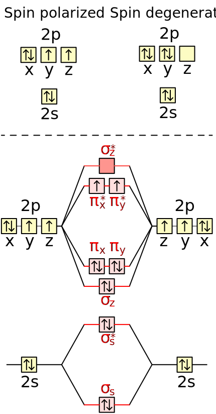
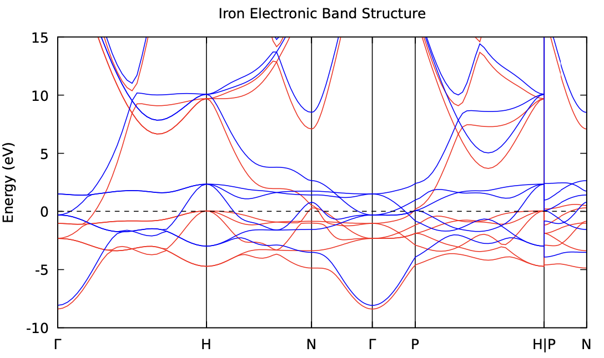

This week we'll cover the topic of spin-polarized systems. For metals, there are
a couple of complications which mean we have to treat them differently from
systems with a non-zero band gap.
As before, all inpus and scripts you need can be found in
/opt/MSE404-MM/docs/labs/lab06 and you should make a copy of the folder to
your home directory.
Spin Polarization
Until now we have assumed that the electronic states are the same for up-spin
and down-spin electrons: in other words, we assumed that each state can be
occupied by two electrons. In a magnetic system, however, the electronic
wavefunctions (and the corresponding Kohn-Sham energies) can be different for
electrons with different spins.
The Oxygen Molecule
An oxygen molecule has an even number of electrons.So you might expect that a
certain number of Kohn-Sham states are filled with two electrons and therefore
the total number of up-spin electrons is equal to the total number of down-spin
electrons. This is, however, not true.

When the two oxygen atoms are sufficiently close to each other so that their
atomic orbitals start to overlap, new states - called molecular orbitals - are
formed. These are called \(\sigma_s\), \(\sigma_s^*\), \(\sigma_z\), \(\pi_x\), \(\pi_y\)
and so on. As a consequence of the symmetry properties that the molecule
possesses, some of the molecular orbitals have the same energies. In Quantum
Mechanics, such wavefunctions are called degenerate. You can see from the
molecular orbital diagram below that the \(\pi_x\) and \(\pi_y\) orbitals are
degenerate and also the \(\pi_x^*\) and the \(\pi_y^*\) orbitals have the same
energy.
When we fill these molecular orbitals with electrons, we end up with two
electrons that we can distribute in the \(\pi_x^*\) and \(\pi_y^*\) orbitals. It
turns out that the repulsive interaction between electrons favors a state in
which the two electrons sit in different molecular orbitals, but have the same
spin. This is known as Hund's Rule. Note that a similar situation occurs in an
isolated oxygen atom.
The directory 01_O2 contains an input file to calculate the total energy of
the oxygen molecule at the experimentally measured bond length. Here the
calculation has been set up exactly as you've seen in the past (i.e., assuming
doubly degenerate band occupation without smearing or spin polarization):
Try running the calculation in this directory. Does it converge?
Answer
While it's possible that the system may randomly meet the convergence
criteria in the self-consistent cycle, this calculation will most likely
not converge. If you look at the estimate accuracy at the end of each
iteration in the output, it will likely vary from step to step, rather
than steadily decreasing as in a well-behaved calculation.
To help converge the system, we can smear the occupancies (as we do in a DFT
calculation for a metal). This will allow the system to converge. The relevant
input variables are the ones highlighed below:
Create a copy of the 01_O2 directory called 01_O2_metal. Modify the
input file in it to use a metallic occupation scheme with a small smearing
width and run the calculation (as above).
Does the calculation now converge?
Take a look at the log file, are the occupations of each band at each
k-point matche your expectations?
Answer
There are a few states which are completely filled with electrons and
then there are two states which are half-filled (i.e. one electron per
state). The last state is almost empty.
While treating this system as a metal may help converging the calculation, it
may not necessarily reach the true ground state (i.e. the state with the lowest
total energy). This is because we have imposed that there is an equal number of
up-spin and down-spin electrons, and treating the system as an metal allows the
electrons to occupy higher energy states. A better way to describe the system is
to allow different numbers of spin-up and spin-down electrons (i.e., doing a
spin-polarized calculation), we can perform a spin-polarized calculation by
adding the nspin and tot_magnetization variables to the input file
(highlighted below):
nspin: this is 1 by default so no spin polarization is taken into
account. To perform a spin polarized calculation it should be set to 2.
tot_magnetization: this is difference between the number of spin-up and
spin-down electrons in the cell.
Task 1.3 - Assuming Spin Polarized Metal
Create another copy of 01_O2 called 01_O2_spin. Then, try to:
Only turn on spin polarization (nspin=2). Does the calculation run?
Answer
The calculation will not run because it needs to know how to set the
number of electrons with each spin.
1234
%%%%%%%%%%%%%%%%%%%%%%%%%%%%%%%%%%%%%%%%%%%%%%%%%%%%%%%%%%%%%%%%%%%%%%%%%%%%%%
Error in routine iosys (1):
fixed occupations and lsda need tot_magnetization
%%%%%%%%%%%%%%%%%%%%%%%%%%%%%%%%%%%%%%%%%%%%%%%%%%%%%%%%%%%%%%%%%%%%%%%%%%%%%%
Set the total magnetization to 0.0, which would be the case if we
don't have any net magnetization in the molecule, i.e. the two spins in
the \(\pi_x^*\) and \(\pi_y^*\) orbitals point in opposite directions. What
is the final total energy?
Final energy
The calculation converges to a total energy of -63.25520699 Ry.
Set the total magnetization to 2.0, which corresponds
to both spins pointing in the same direction. Is the total energy lower?
Are the Kohn-Sham energies the same for up-spin electrons and down-spin
electrons?
Answer
The calculation converges to a total energy of -63.29338911 Ry. This
is lower than for the configuration in which the spins point in the
same direction. The Kohn-Sham energies are different for up-spin and
down-spin electrons: the Kohn-Sham eigenvalues and occupations are
written in the log file with the spin-up values printed first,
followed by the spin-down values.
You have now seen that allowing for different numbers of up-spin and down-spin electrons can sometimes lower the total energy of the material.
Fun fact
O2 can exist in its non-magnetic state, but it this state it is actually quite dangerous (see e.g. this
paper),
so treating the spin correctly is important for your health!
Iron
Now that you've seen how including spin polarization has allowed us to correctly
describe the ground state of a molecular system, the next step is to use it to
describe a magnetic crystal. In contrast to a molecule, where the Kohn-Sham
wavefunctions of all states are fully contained in the unit cell of our DFT
calculation, the Kohn-Sham wavefunctions of electrons in crystals are
delocalized over many unit cells. In other words: each unit cell only contains a
small fraction of the electron which occupies a certain Bloch Kohn-Sham state.
As a consequence of this, the difference of the total number of up-spin and
down-spin electrons in each unit cell does not have to be an integer number.
Also, it is much harder to estimate the total magnetization of each unit cell of
a crystal.
One of the most common magnetic crystals is iron, so we'll study this material.
The directory 02_Fe contains an input file for iron. Note this is a BCC
crystal structure (as set by ibrav = 3 in the input file), whereas most of the
crystal structures you have studied so far in the labs have been FCC. The
calculation has been set up in the usual way for a spin polarized (nspin=2)
metallic system (with smearing).
Task 2.1 - Fixed Magnetization
Run this calculation and check everything works as expected. What is the
final total energy?
Answer
The final total energy should be -55.52528610 Ry.
Now make a copy of the calculation directory and in this new directory,
modify the input file to allow for spin polarization. Try running the
calculation with tot_magnetization = 0.0 first, and compare your total
energy to the one obtained using doubly degenerate bands.
Warning
Note that iron remains a metal in its magnetic configuration. So you
need keep the input variables associated with smearing the
occupancies even if you are running a spin-polarized calculation for
iron.
Answer
The total energy becomes -55.52528589 Ry. Almost identical to the
one obtained with the doubly degenerate bands. This is because these
two calculations are essentially identical.
Now try setting the total magnetization to 1.0 and see how the total
energy changes: is it lower than the result of the non-magnetic
calculation?
Answer
The total energy becomes -55.53839616 Ry. It is lower than the
result obtained without spin polarization.
Try setting the total magnetization to 2.0. How does the final energy
compare to the previous value?
Answer
The total energy becomes -55.56226730 Ry. Lower than all previous
cases.
We could keep going like this and try out many different values for the total
magnetization to see which one has the lowest total energy (as discussed above,
the total magnetization in the unit cell does not have to be an integer).
Instead of doing this yourself, Quantum Espresso can do it for you: this is
achieved by setting the starting_magnetization input variable.
Task 2.2 - Relaxed magnetization
Make another copy of the 02_Fe directory, and this time set
starting_magnetization = 1.0 (remove tot_magnetization). Run the
calculation and see what the final total magnetization per cell is.
Answer
The total magnetization becomes larger than 2.0.
1
total magnetization = 2.21 Bohr mag/cell
This value is in good agreement with the experimental value of 2.15
Bohr mag/cell.
Use the input files and scripts in the directory extra_bandstructure to
generate a plot of the electronic band structure of BCC Fe.
Answer
You can find the relevant input file in the directory
02_Fe/extra_bandstructure. The band structure should look like
this:

You can find README.md in the directory for more information on
how to reproduce this plot.
Summary
In this lab you have seen:
how to do a DFT calculation including spin polarization.
how some materials can lower their ground state energy by becoming magnetic.
how to use spin-polarized calculations to find the correct magnetization of a
magnetic crystal.